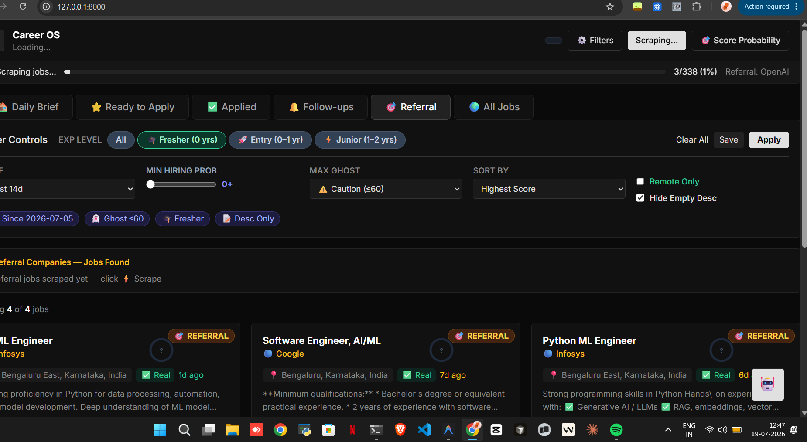
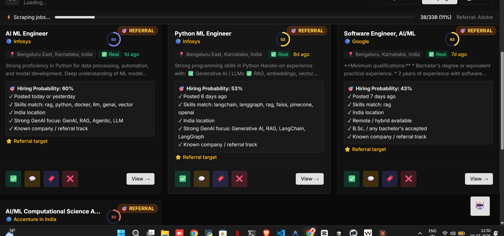
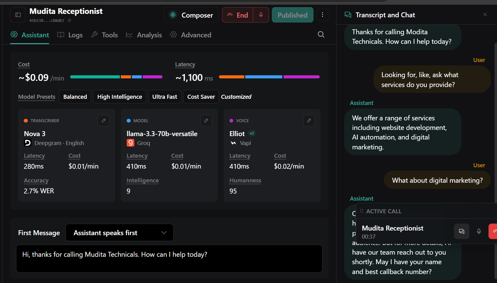
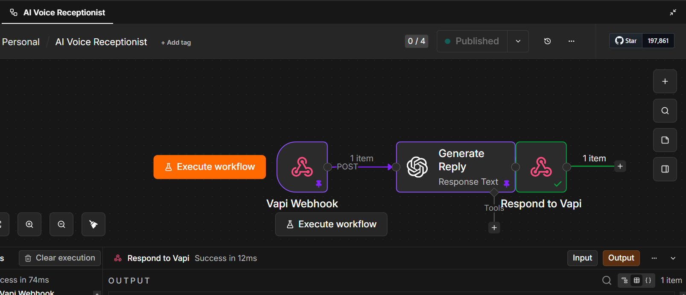
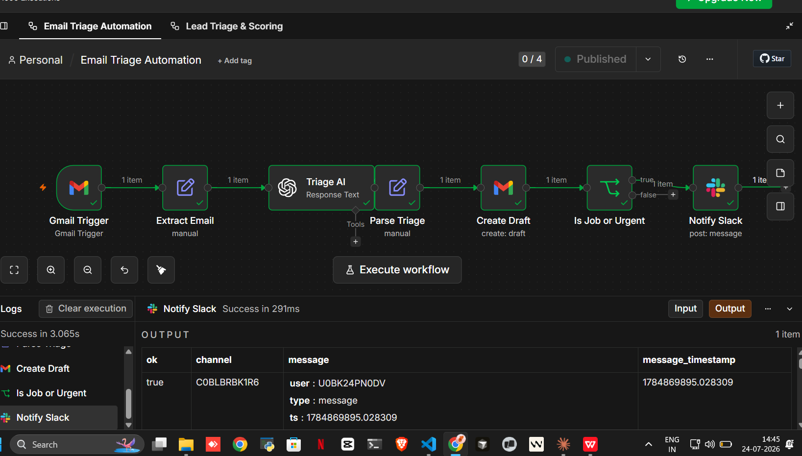
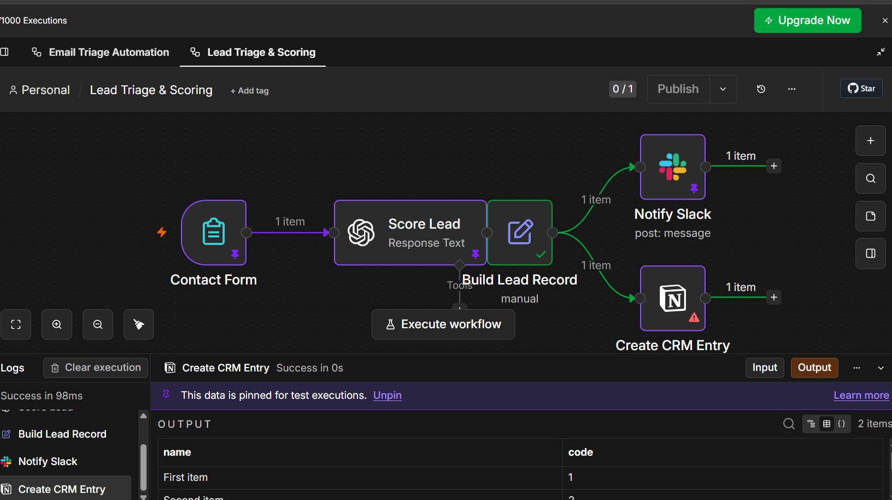
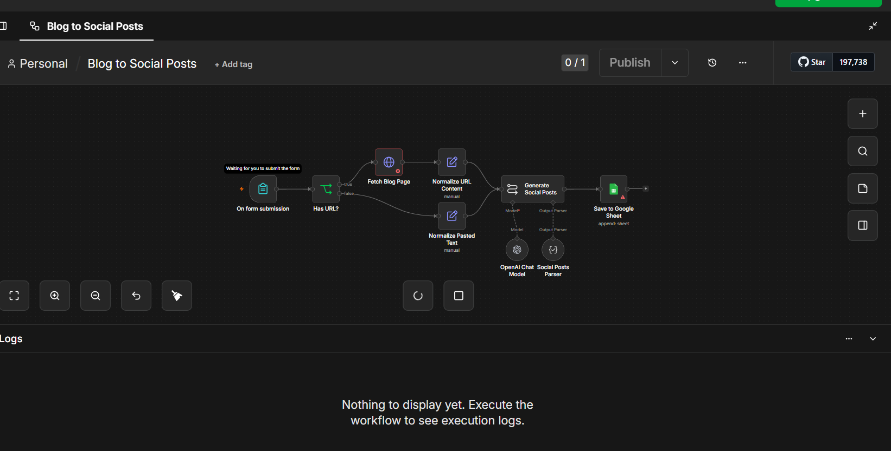
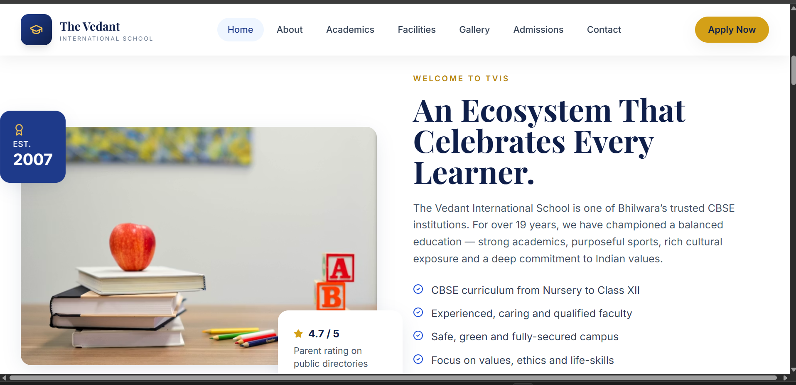
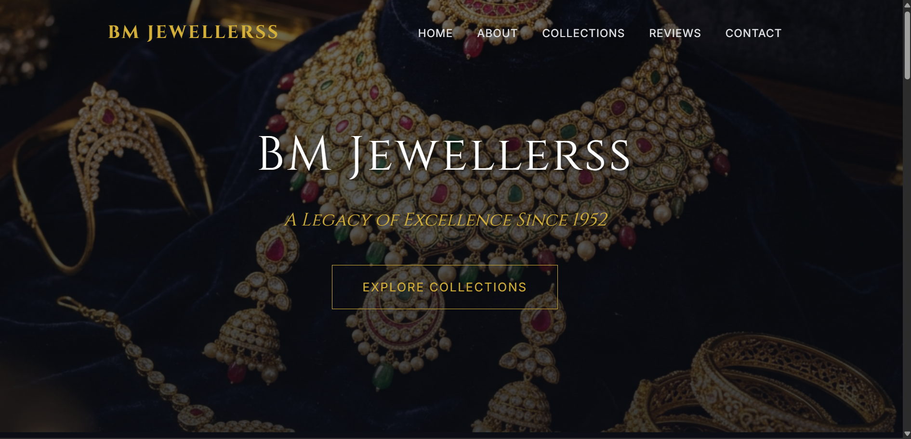
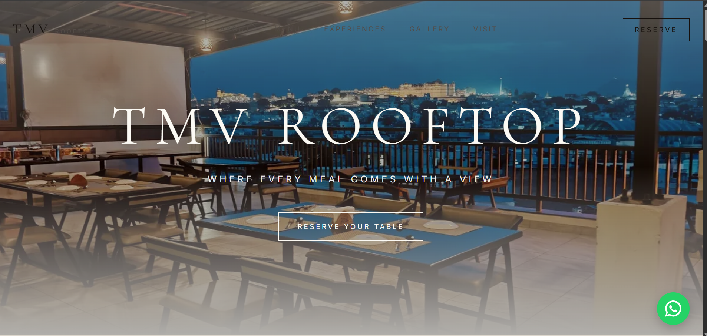

02 · GenAI / RAG
LLM Support Intelligence
Support-intelligence system combining LLM reasoning, knowledge retrieval, ticket triage, account context, and evaluation workflows for technical support teams.
I build AI systems that automate real workflows — from intelligent job scoring pipelines to voice-powered receptionists. I work at the intersection of LLMs, prompt design, and production automation.
I'm Aryan, an AI Automation Engineer and LLM Developer with a B.Sc. in Data Science from BSE Institute, Mumbai. I design and ship AI systems that solve real business problems — not demos, not tutorials.
My work spans prompt engineering, multi-agent pipelines, voice AI, and workflow automation. I've built tools that triage emails, score leads, generate content, and help job seekers find referral opportunities — all powered by LLMs.
Currently building a website + AI automation business with a partner, shipping client sites and intelligent workflow systems side by side.
Every system I design starts with what the model can do, then I engineer around its limits.
If a task runs more than twice, I automate it. n8n, webhooks, APIs — whatever it takes.
I treat prompts as first-class engineering artifacts — versioned, tested, and iterated.
Shipping > planning. I build, test in production, and iterate based on real outputs.
Each project is a full AI system — real problem, real architecture, real screenshots.
Job hunting is noise. Hundreds of listings, no signal — no way to know which ones are real, match your skills, or have referral paths.
End-to-end AI pipeline: scrape jobs → score via LLM → match resume skills → filter by ghost rate → surface referral-eligible roles with hiring probability.
Structured scoring prompts with JSON output — role (job scorer), task (score 0–100), context (resume + JD), constraints (return reasoning), format (JSON). Iterated on 338+ real jobs.


Small businesses miss leads after hours. Generic IVR loses callers. Human receptionists are expensive and unavailable 24/7.
Vapi voice agent with Deepgram STT (2.7% WER), Llama-3.3-70b on Groq for low-latency reasoning, Elliot voice (95 humanness). Webhooks feed n8n for CRM logging.
Persona-based system prompt: role (friendly receptionist for Mudita Technicals), task (collect name, query, callback), constraints (no pricing — escalate to human), structured webhook output.


Each workflow uses schema-enforced prompts. Triage returns {category, priority, action}. Lead scorer returns {score, tier, reasoning}. Blog generator returns {linkedin, twitter, instagram}.



Selected repositories covering GenAI, agent systems, APIs, automation, routing, memory, and classical ML.
Support-intelligence system combining LLM reasoning, knowledge retrieval, ticket triage, account context, and evaluation workflows for technical support teams.
An AI workflow-agent project focused on turning business tasks into structured, tool-driven execution paths with explicit routing and deterministic steps.
API-first conversational finance project demonstrating how an AI assistant can be exposed as a reusable backend service rather than a standalone chat UI.
A focused exploration of persistent memory for AI agents — separating reusable context from the transient state of a single model interaction.
An automated workflow integrating multiple AI agents to fetch stock prices, retrieve SEC filings, perform rule-based analysis, and generate comprehensive financial reports with human-in-the-loop approval.
A classical machine-learning project using ensemble learning to model accident-risk patterns and demonstrate applied predictive modeling beyond LLM systems.
A translation-focused processing pipeline for multilingual text workflows, demonstrating practical NLP automation and API-oriented processing.
Designed and shipped for real businesses. Performance, conversion, and brand identity first.

CBSE institution in Bhilwara, est. 2007. Full school website with academics, admissions flow, gallery, and facilities. Built to convert parents on first visit.
Education Admissions CBSE
Heritage jewellery brand since 1952. Dark luxury aesthetic with collection showcase, brand story, and trust-building design for a Rajasthan jeweller.
Luxury Jewellery Heritage
Premium rooftop restaurant with city views. Editorial photography-led design, reservation CTA, WhatsApp integration, and immersive experience sections.
F&B Hospitality ReservationsNot a list of things I've heard of — these are inside my actual shipped projects.
Every system I build follows a deliberate architecture — from trigger to output.
API call, form submit, cron, webhook, or user input. Every pipeline needs a clean, deterministic entry point.
Raw input is never clean. I always add a normalization step before the LLM sees data.
Precision prompt — role, task, context, constraints. Output is always structured JSON for downstream parsing.
LLM output is parsed and validated. Conditional branches handle edge cases and routing.
Final output hits the right destination — CRM, Slack, email draft, sheet — stakeholders notified automatically.
I treat prompts like engineers treat code — structured, testable, version-controlled.
Every prompt starts with a precise persona — not "helpful assistant" but "You are a lead scoring engine for B2B SaaS...". The role anchors all behavior.
One sentence, imperative voice. "Score this lead from 0–100 based on...". Vague task = vague output. Precise task = usable output.
Dynamic context is templated in — resume, JD, email body, form data. Static instructions and dynamic data are always separated with clear delimiters.
Explicit rules prevent hallucination. "Only use provided data. If unsure, return null. Never invent contact details."
Always specify exact schema. "Return only valid JSON: {score, tier, reasoning}". Downstream code depends on predictable structure.
Test against 10–20 real examples before deploying. Look for failure modes — edge cases, format breaks — and patch each one explicitly.
Prompts are versioned like code. Breaking behavior changes get new versions. No silent prompt drift between deployments.
Looking for roles in AI automation, prompt engineering, and LLM development. I bring working systems, not just knowledge.